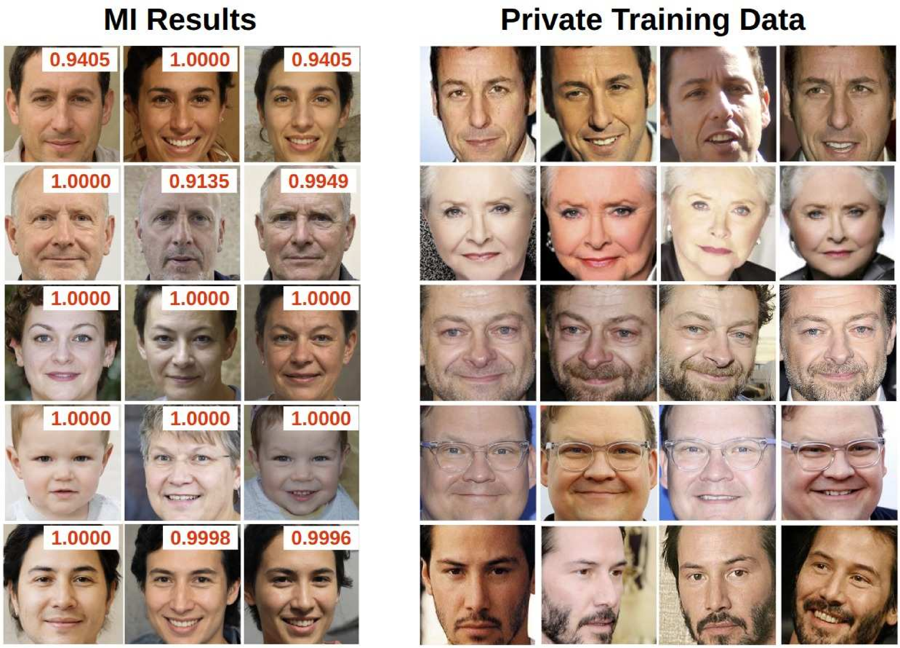
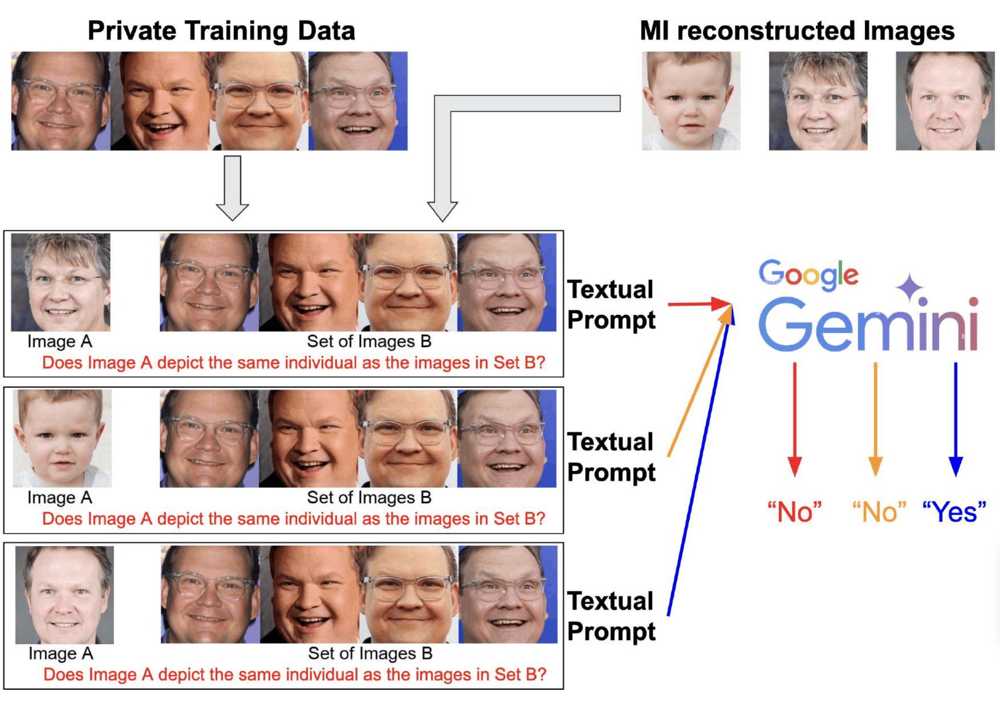

Teaser

Figure 1. We present the first in-depth study on the Model Inversion (MI) evaluation framework FCurr. The MI-reconstructed images (left) are deemed successful attacks with high confidence (red scores), yet they do not visually resemble the actual private training individuals (right) — a significant false-positive problem that inflates reported attack accuracy.
Abstract
Model Inversion (MI) attacks aim to reconstruct information from private training data by exploiting access to a target model. Nearly all recent MI studies evaluate attack success using a standard framework that computes attack accuracy through a secondary evaluation model trained on the same private data and task design as the target model.
In this paper, we present the first in-depth analysis of this dominant evaluation framework and reveal a fundamental issue: many reconstructions deemed "successful" are in fact false positives that do not capture the visual identity of the target individual. We show these MI false positives satisfy the same formal conditions as Type I adversarial examples, and demonstrate extremely high false-positive transferability.
To address this, we introduce a new evaluation framework FMLLM based on Multimodal Large Language Models, whose general-purpose visual reasoning avoids the shared-task vulnerability. We reassess 27 MI attack setups and find consistently high false-positive rates under the conventional approach — calling for a reevaluation of progress in MI research.
Key Findings
False Positives ≡ Type I Adversarial Examples
MI false positives and Type I adversarial examples are mathematically equivalent — the same construct arising under different problem contexts.
Adversarial Transferability Inflates Accuracy
MI-generated negatives exhibit abnormally high false-positive rates (up to 89–97%) across evaluation models, characteristic of adversarial behavior.
SOTA Attacks Are Overestimated
Attacks reporting over 90–100% accuracy under FCurr never exceed 80% true success rate. Many fall below 60% under our FMLLM.
Gemini-2.0 as Reliable Evaluator
Among tested MLLMs, Gemini-2.0 achieves 93.84% "Yes" on positive pairs and 95.59% "No" on negative pairs with zero refusal rate.
Method
FMLLM: Our Evaluation Framework
We replace the standard evaluation model with a Multimodal LLM that uses general-purpose visual reasoning — avoiding the shared-task vulnerability that enables adversarial transferability.

F_MLLM evaluation pipeline
See our Code & prompt construction for the full prompt construction and evaluation code used to generate and run these queries.
You are an expert in face recognition. Taking into account the face aging, lighting, different hair styles, wearing and not wearing of eye glasses or other accessory, do the task in the image. Only answer yes or no
Citation
@article{ho2025revisiting, title = {Revisiting Model Inversion Evaluation: From Misleading Standards to Reliable Privacy Assessment}, author = {Ho, Sy-Tuyen and Koh, Jun Hao and Nguyen, Ngoc-Bao and Binder, Alexander and Cheung, Ngai-Man}, journal = {arXiv preprint arXiv:2505.03519}, year = {2025} }